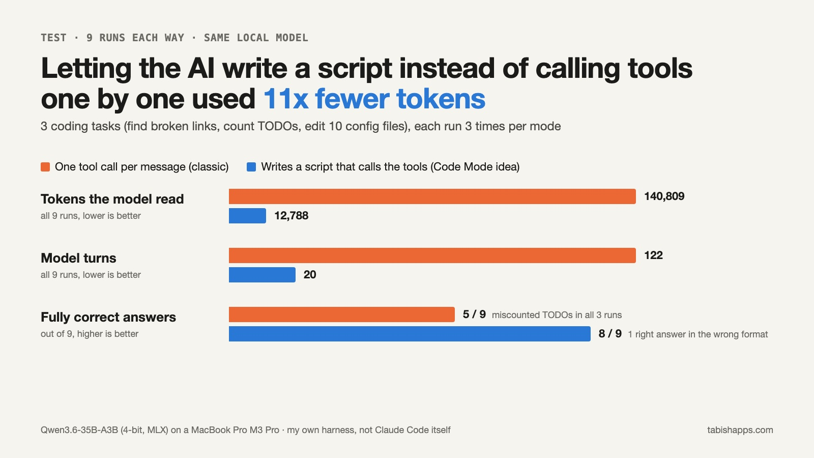
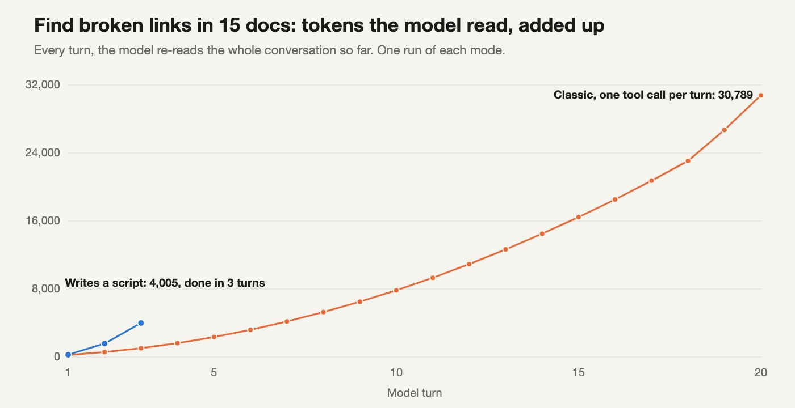

I tested the idea behind Claude Code's new Code Mode. The AI read 11x fewer tokens and stopped miscounting
- The test: the same 3 coding tasks, done by the same local AI model in two ways: one tool call per message (how most agents work today), or one short script that calls the tools (the Code Mode idea). 9 runs each way.
- The result: the script way read 11x fewer tokens (12,788 vs 140,809) and needed 6x fewer turns. It also got the counting task right every time. The classic way miscounted it in all 3 runs.
- The advice: Code Mode is worth trying for jobs with many similar steps: searching many files, counting, the same edit in many places. Keep the classic way for work where the AI must think about each result.

When an AI coding agent works on your project, it uses tools: read a file, search, edit. Normally it asks for one tool, waits for the result, reads it, and then asks for the next one. Every step is a new turn, and every turn re-reads the whole conversation so far.
Yesterday the Claude Code team posted on X about an experimental feature called Code Mode (about 12,000 likes in a day). The idea: instead of asking for tools one by one, "Claude writes scripts that chain your tools together". One script can read 15 files, filter the results and send back only the part that matters. The Code Mode docs suggest it for tasks with many related tool calls.
That sounds good, but how much does it really save? And does the AI make more or fewer mistakes when it writes code instead of reading every result? I wanted numbers, so I built a small test on my Mac.
What I tested (and what I didn't)
To be clear first: I did not test Claude Code's own Code Mode. It only runs in an interactive terminal session, so I couldn't run it many times from a script and measure it fairly. Instead, I tested the idea behind it, with an open model running locally, so I could count every token.
- Model: Qwen3.6-35B-A3B (4-bit), run with Apple's MLX on a MacBook Pro with an M3 Pro chip.
- Tools: five simple tools I wrote in Python: list files, read a file, check if a file exists, search with a pattern (grep), and edit a file. Both modes got the exact same tools.
- Classic mode: the model replies with one tool call as JSON. My code runs it and sends back the result. Repeat until the model gives an answer.
- Script mode (the Code Mode idea): the model replies with a short Python script that calls the same tools. My code runs it and sends back only what the script prints. Claude Code uses JavaScript for this; I used Python because that is what my harness was written in.
- Project: a small fake project made by a script, so I knew every right answer before the test: 15 Markdown docs, 18 source files and 10 JSON config files.
The three tasks
- Broken links. "Read every Markdown file in docs/ and find the links that point to local files that do not exist." This is the example the Code Mode docs use. There were 6 broken links, one of them an image in a subfolder.
- Count TODOs. "Count the TODO comments in src/ and name the 3 files with the most." There were 48 TODOs in 14 files.
- Same edit in many files. "In every JSON file in config/, change maxAttempts from 3 to 5. Leave other values alone." 8 files needed the change; 2 had other values and had to stay the same.
Each task ran 3 times in each mode: once with no randomness (temperature 0), and twice with normal randomness (temperature 0.7). I checked the answers with code, not by eye. For the edit task, I checked the files on disk after the run.
The results
| Task (3 runs each) | Classic: right | Classic: turns | Classic: tokens read | Script: right | Script: turns | Script: tokens read |
|---|---|---|---|---|---|---|
| Broken links | 2 of 3 | 59 | 87,790 | 2 of 3* | 8 | 7,410 |
| Count TODOs | 0 of 3 | 9 | 7,491 | 3 of 3 | 6 | 2,952 |
| Same edit in 10 files | 3 of 3 | 54 | 45,528 | 3 of 3 | 6 | 2,426 |
| Total | 5 of 9 | 122 | 140,809 | 8 of 9 | 20 | 12,788 |
* In one run, the script found all 6 broken links but wrote the paths in a different form than I asked for ("docs/auth-old.md" instead of "auth-old.md"). My checker counted it as wrong. A person would probably accept it.
"Tokens read" is the total size of everything the model had to read, added up over all turns. This is what most AI APIs charge you for as input.
1. The token gap grows with every step

In classic mode, the model read the 15 docs one at a time. That is 15 turns, plus a few more to list files and answer. Each new turn carries every file it has already read, so the cost does not grow in a straight line. It curves up.
In script mode, the model wrote one loop: read every file, pull out the links, check each one, print only the broken ones. The 15 files never entered the conversation at all. Only the 6 results did.
The edit task shows the same pattern even more clearly: 45,528 tokens vs 2,426, a 19x difference, with the same correct result in both modes.
2. Counting is where classic mode fails
This one surprised me. In classic mode, the model was smart: it used the search tool once and got back a list of all 48 TODO lines. Then it had to count them by reading. It got it wrong in all 3 runs:
| Run | Total TODOs | payments.ts | orders.ts |
|---|---|---|---|
| Right answer | 48 | 9 | 7 |
| Classic, run 1 | 49 | 10 | 7 |
| Classic, run 2 | 50 | 11 | 8 |
| Classic, run 3 | 49 | 10 | 7 |
| Script, all 3 runs | 48 | 9 | 7 |
Language models are bad at counting long lists by eye. Code is not. In script mode the model simply wrote a loop that counts lines, and the computer did the counting:
for file_path in list_files("src"):
count = 0
for line in read_file(file_path).splitlines():
if "// TODO" in line:
count += 1
if count > 0:
todo_counts[file_path] = countThis is the part of Code Mode I find most useful. It's not only cheaper. For any job that needs exact numbers, it moves the work from the model's guess to real code.
3. Scripts can fix themselves
The first script for the links task had a bug. Its pattern grabbed a "(" as part of every link, so it reported every link as broken. The model saw the strange output, explained its own mistake, fixed the pattern and ran it again. The second run was correct. That cost one extra turn, and it was still 7x cheaper than classic mode.
Classic mode had its own slip on the same task: in one run it read all 15 files, then searched only for links ending in ".md", and missed the broken image link.
4. Writing scripts costs more output
It's not all savings. Script mode wrote more output: 5,211 tokens vs 4,170, because a script is longer than a short JSON tool call. Output tokens usually cost more than input tokens. But here the input savings (128,000 fewer tokens) are far bigger than the extra 1,041 output tokens.
On time, script mode took 229 seconds for all 9 runs and classic mode took 646 seconds. My Mac was busy with other work during the test, so treat those times as rough.
When to use Code Mode, and when not to
Based on this test, I would turn it on for:
- Jobs that touch many files the same way: renames, version bumps, config changes.
- Anything that needs exact numbers: counting, totals, "which file has the most".
- Searches where most results are noise and only a few matter.
I would not expect much from it for:
- Work where the AI needs to understand each file before deciding what to do next, like debugging a strange error. There is no loop to write.
- Small tasks with one or two tool calls. There is nothing to save.
One more thing to know before you try it: when the AI runs a script, many actions happen in one step. The Code Mode docs say your permission rules still check each tool call inside the script, but in auto mode the safety check reviews the script as a whole, not each call. If you have hard rules (for example "never push to main"), keep them as deny rules or hooks, as the docs suggest.
If you want to try the real thing, the docs say you need Claude Code v2.1.323 or later, a supported model, and an interactive terminal session started with CLAUDE_CODE_EXPERIMENTAL_CODE_MODE=1. It is experimental and may change.
Limits of this test
- I tested the idea, not Claude Code's Code Mode itself. Claude models are much stronger than the local model I used, so they may make fewer counting mistakes in classic mode.
- My tasks were chosen to have many similar steps, which is exactly where scripts should help. On other tasks the gap would be smaller, or zero.
- 3 runs per task and mode, one model, one small fake project. Treat this as one honest sample, not a benchmark.
- I did not use prompt caching. With caching, re-reading old turns is cheaper (I tested that in an earlier article), so the money saved would be smaller than 11x. The turns, and the counting mistakes, would stay the same.
- I also tried a second, smaller model (Gemma 3 12B). On this Mac it was too slow to finish the classic runs in a reasonable time, so I left it out rather than show half a result.
FAQ
What is Code Mode in Claude Code?
It is an experimental feature where Claude writes scripts that chain your tools together, instead of asking for tools one by one. One script can read many files, filter the results and send back only the part that matters.
How do I turn on Code Mode in Claude Code?
The docs say you need Claude Code v2.1.323 or later, a supported model, and an interactive terminal session started with CLAUDE_CODE_EXPERIMENTAL_CODE_MODE=1. It is experimental and may change.
Does Code Mode save tokens?
In this test of the idea, yes. The script way read 11x fewer tokens (12,788 vs 140,809) and needed 6x fewer turns. It wrote a little more output: 5,211 tokens vs 4,170.
When should you use Code Mode?
Use it for jobs with many similar steps: the same change in many files, counting and totals, or searches where most results are noise. It helps little with debugging, where the AI must think about each result, or with tasks of one or two tool calls.
Do permission rules still work in Code Mode?
The docs say your permission rules still check each tool call inside the script. In auto mode, the safety check reviews the script as a whole, so keep hard rules as deny rules or hooks.
Sources
- @ClaudeDevs on X, 18 November 2026: Check out Code Mode, a new, experimental way for Claude Code to work with tools.
- Claude Code docs: Run tool calls from code with Code Mode.
- Model: mlx-community/Qwen3.6-35B-A3B-4bit, run with mlx-lm 0.32.2.